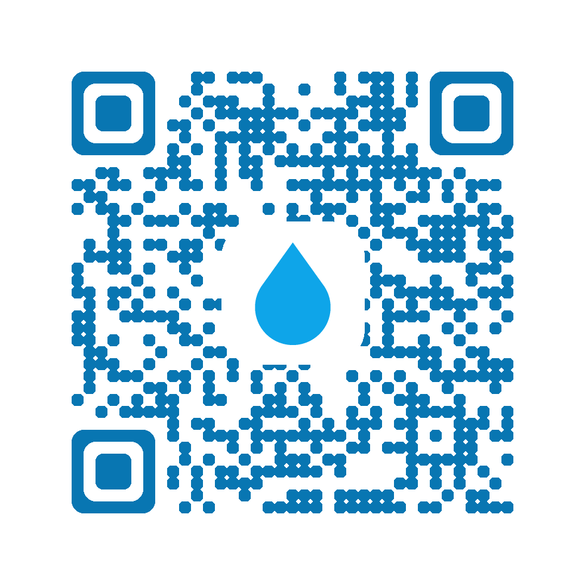

写给零基础开发者的上手手册 · 更新于 2026 年 10 月
| 你的目标 | 推荐方案 | 耗时 | 花费 | 要备案吗 |
|---|---|---|---|---|
| 自己在手机上用 | 方案 A | 3 分钟 | 0 元 | 不用 |
| 发给家人朋友用（H5 链接） | 方案 A+ 分享 | 10 秒 | 0 元 | 不用 |
| 朋友离线也能装、不依赖链接 | 方案 B（打 APK） | 1–2 小时 | 0 元 | 不用 |
| 上架应用商店公开下载 | 方案 C | 1–3 个月 | 300 元起 | 联网才需要；单机也要交承诺函 |
| 加了账号 / 云同步 / 服务器 | 必须先备案再上线 | 2–4 周 | 服务器费 | 必须要 |
下面章节对应各方案，按需阅读即可，不用全看。
这个 App 已经做好了 PWA（渐进式 Web 应用）能力并发布上线。你在手机浏览器里打开链接，点「添加到主屏幕」，桌面就会出现一个独立图标，点开是全屏、无地址栏的，看起来和正经 App 没区别，断网也能用（记录都在本地）。
链接已经在线上，分享出去朋友点开就能用，不需要对方注册、不需要下载任何东西。常用三种方式：
| 方式 | 怎么操作 | 适合场景 |
|---|---|---|
| 微信发链接 | 把链接复制粘贴到微信聊天框发送，对方点开即用 | 一对一、群聊，最常用 |
| 发二维码 | 把下面这张二维码图片发到微信/群里，对方长按识别 | 面对面、打印张贴、群里发图 |
| 发到朋友圈 | 先在微信里打开链接 → 右上角「···」→「分享到朋友圈」 | 广而告之 |
| 朋友的手机 | 打开后会怎样 |
|---|---|
| 安卓 + 微信 | 微信内置浏览器直接可用，正常记录；点「···」→「在浏览器打开」后还可添加到桌面 |
| 安卓 + 系统浏览器 | 完整体验，可直接「添加到主屏幕」变成独立 App 图标 |
| iPhone + 微信 | 能正常记录，但无法添加到主屏幕；想装到桌面必须点「···」→「在 Safari 中打开」，再用 Safari 的分享 ⬆️ 添加 |
| 电脑 | 浏览器直接打开，界面自动居中成手机宽度，照样能用 |

如果你想要一个真正的 .apk 文件（可以直接发微信、用文件管理器安装，不依赖链接），可以用 HBuilderX 云打包——全程不用装 Android Studio，不用配 Java 环境，最适合新手。
dcloud.io，下载「标准版」，安装后免费注册一个 DCloud 账号。niaolema，模板选「空模板」。index.html 整个复制进项目根目录，覆盖自动生成的那个。可以把 manifest.json、sw.js、assets 一起拷进去（APK 内可以不用 PWA，但留着不碍事）。com.yourname.niaolema，点打包，等 5–10 分钟出包。.apk 传到手机（微信/QQ 发给自己、数据线、网盘都行），点开安装。安卓会提示「未知来源应用」，去 设置 → 允许安装未知来源应用 打开即可。iPhone 没法像安卓那样随便装 apk。iOS 只有三种方式：① 方案 A 的「添加到主屏幕」（最推荐，效果一样）；② 自己花 99 美元/年注册 Apple Developer，用 Xcode 打包自签（需要 Mac 电脑，且 7 天要重签，麻烦）；③ 上架 App Store（见方案 C）。对个人使用来说，方案 A 是唯一合理选择。
上架 = 让陌生人能在应用商店搜到并下载。这一步的门槛不在技术，而在资质。先看清楚要什么：
| 资质 | 安卓商店（华为/小米/OPPO/vivo/应用宝） | 苹果 App Store 中国区 |
|---|---|---|
| 主体 | 多数主流商店优先/仅接受企业主体；个人账号类目和权限受限很多，建议注册个体工商户（几百元、3–5 个工作日） | 个人开发者账号可以（99 美元/年） |
| 软件著作权（软著） | 硬性要求，没有不进审核。官方自行申请约 300 元 / 30–60 个工作日；找代理加急 300–800 元 / 1–5 个工作日 | 不强制，但建议办理 |
| App 备案 | 联网应用必须；纯单机可选「否-单机」并上传单机承诺函，平台会做单机测试 | 中国区上架需在 App Store Connect 填 ICP 备案号 |
| 隐私政策 | 必须有可访问的 HTTPS 链接 | 必须有，且首启弹窗 |
| 技术门槛 | 签名 APK + 加固 + 各商店分别注册提交 | 需要 Mac + Xcode，用 WebView 包壳的纯网页应用很容易被以「功能过于简单」拒审 |
ccopyright.com.cn 在线申请，准备源代码前后各 30 页 + 说明文档。找代理可加急。依据《互联网信息服务管理办法》和工信部 2023 年《关于开展移动互联网应用程序备案工作的通知》：在中国境内面向公众提供互联网信息服务（网站、App、小程序）都必须备案。但有个重要豁免：
以下情况就必须备案了：
粤ICP备2026XXXXXX号（网站）或 App 备案号。会短信通知你。beian.mps.gov.cn（全国互联网安全管理服务平台）注册，填写主体和网站/App 信息，审核通过后在页脚展示公安备案号。| 项目 | 费用 | 耗时 | 备注 |
|---|---|---|---|
| 轻量云服务器 | 99–300 元/年 | — | 备案资格要求 ≥3 个月 |
| 域名 | 30–80 元/年 | 实名 1 天 | 做落地页才需要 |
| ICP / App 备案 | 免费（官方不收费） | 合计 2–4 周 | 任何「代办收费」都只是帮你填表 |
| 公安联网备案 | 免费 | 1–2 周 | 工信部通过后 30 天内办 |
| 软件著作权 | 官费约 300 元 | 30–60 工作日 | 代理加急 300–800 元 / 1–5 工作日 |
| Apple 开发者 | 99 美元/年 | 审核 1–2 天 | 仅上 iOS 需要 |
| 安卓商店开发者账号 | 免费 | 实名 1–3 天 | 各商店分别注册 |
排尿记录属于个人健康信息，在《个人信息保护法》里属于敏感个人信息。好消息是：「尿了吗」不收集、不上传、不做任何分析，数据从头到尾只在你自己手机里，天然规避了绝大部分合规义务。
如果将来要加云同步、账号体系，那就要做这几件事：
健康类 App 如涉及诊断、治疗建议、医疗广告，监管会严格得多；作为个人记录工具则相对宽松。App 内已经注明「提示仅供参考，不构成医疗建议」。
现在立刻做：方案 A —— 手机打开分享链接，添加到主屏幕。3 分钟，结束。
想发给别人安装包：方案 B —— HBuilderX 云打包出 APK，微信发过去就能装。
想做成正经产品上架：先办软著（周期最长，先启动）→ 注册个体工商户或公司 → 如需联网再加服务器并备案 → 逐个商店提审。全程预留 2–3 个月。
永远不用做的：为一个纯单机 App 去「买备案」「买软著」——那些服务是给要上架联网产品的人用的。